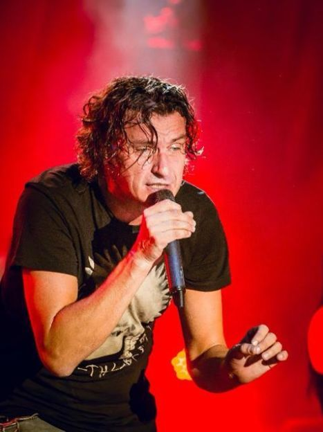
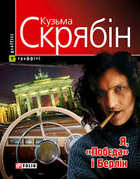
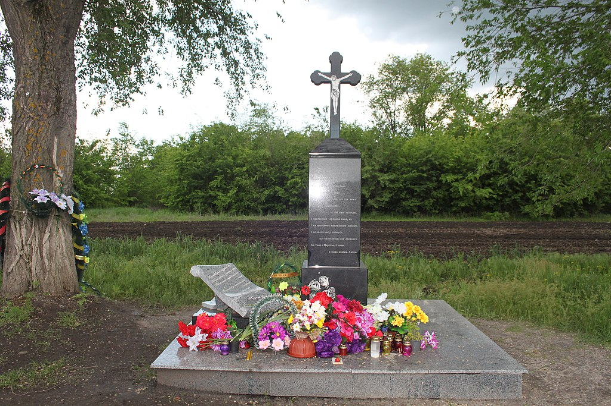

Про Кузьму
Андрій Кузьменко, він же Кузьма, чи Кузьма Скрябін, — український співак, лідер популярного гурту «Скрябін». Митець
загинув в автокатастрофі у 2015-му на 47-му році життя, залишивши по собі великий творчий доробок, народну любов і
чимало суперечок щодо причини його смерті.
За життя Андрій Кузьменко встиг спробувати себе в різних ролях — як співак, поет і композитор, письменник, ведучий,
актор, продюсер, громадський діяч.
Шанувальники любили його за прямолінійність і висловлювання «без цензури». Його музика відрізнялася від того, що
пропонували інші, а книжки, написані в стилі антигламур, критики називали надто своєрідними.
Андрій Кузьменко був одним із тих, про кого кажуть: його можна любити чи ненавидіти, проте залишатися байдужим точно не
вдасться.
БІОГРАФІЯ
Андрій Кузьменко народився 17 серпня 1968 року в м. Самбір, що на Львівщині. Згодом сім’я переїхала до Новояворівська.
Майбутній співак закінчив музичну школу по класу фортепіано. Як згодом згадувала мама майбутнього митця, спеціально на
співака його ніхто не готував, однак він був дуже здібним і учнівську програму виконував на відмінно.
Далі на догоду батькам після школи Андрій узявся освоювати медицину.

Творчість
Зараз, коли говорять про Андрія Кузьменка, передусім згадують про його музичні досягнення. Проте він був особистістю багатогранною. Крім музики, писав вірші та прозу, неодноразово демонстрував акторський талант, займався продюсерською діяльністю, працював на телебаченні. Захоплювався артист і спортом — навіть отримав звання кандидата у майстри спорту з біатлону.
Акторська діяльність
Андрій Кузьменко неодноразово брав участь у проєктах, де міг проявити свій акторський талант. Зокрема артист грав у:
- телевізійній кінокомедії-мюзиклі «Вечори на хуторі біля Диканьки» (друг Вакули);
- комедійному серіалі «Леся+Рома» (зіграв самого себе);
- «Карнавальній ночі на «Інтері» у 2006 р. (грав самого себе);
- «Дуже новорічному кіно» (гість на новорічному святі в музеї);
Крім того, у різні роки Кузьма був ведучим телепередач «Шиканемо» на Інтері, «Битва націй» та «Дача» на ICTV, «Казка з татом» на «ПлюсПлюс». А найвідомішим проєктом митця став «Шанс». Учасниками програми ставали переможці «Караоке на майдані». З ними працювали Андрій Кузьменко і Наталія Могилевська, а також провідні стилісти, дизайнери, візажисти протягом одного дня, наприкінці якого співаки повинні були виконати пісню у супроводі танцюристів у прямому ефірі. Переможців обирали глядачі.
Книги
Мав Кузьма й письменницький талант. Підтвердженням цього є високий інтерес читацької авдиторії до написаних ним книг.
У 2006 році Андрій Кузьменко видав першу книгу-автобіографію «Я, Побєда і Берлін». Книга мала неймовірну популярність і кілька разів перевидавалася. В тому ж таки 2006 році вийшла друком його повість «Місто, в якому не ходять гроші». До речі, в 2018 році вийшов однойменний фільм за мотивами цього твору.
Андрій Кузьменко написав ще дві книги в стилі «Побєди…» — «Я Паштєт і Армія», і «Я, Шонік і Шпіцберген», які знову ж таки читачі сприйняли з цікавістю. Не в останню чергу через специфічний стиль письма автора, який не нагадує жодне з художніх видань того часу. Це вже згодом у літпросторі почали з’являтися книги у своєрідному кузьмівському стилі антигламур.
ЗАГИБЕЛЬ
Андрій Кузьменко загинув 2 лютого 2015 року в ДТП біля села Лозуватка Криворізького району Дніпропетровської області. За версією слідства, аварія сталася близько 8:20 ранку. Натомість концертний технік гурту «Скрябін» Юрій Лисяк запевняв, що ДТП сталася близько 7 години ранку.
